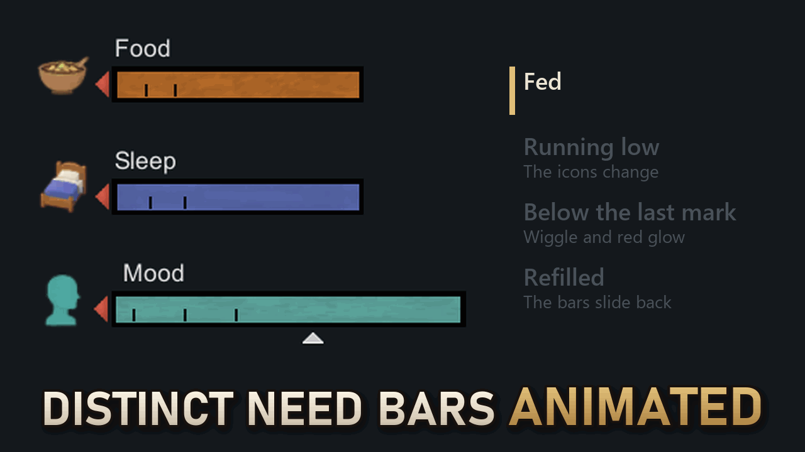
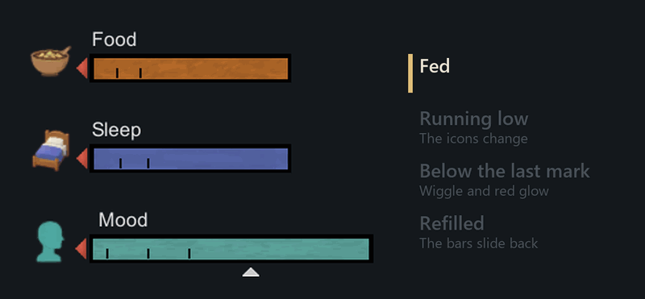
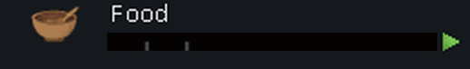
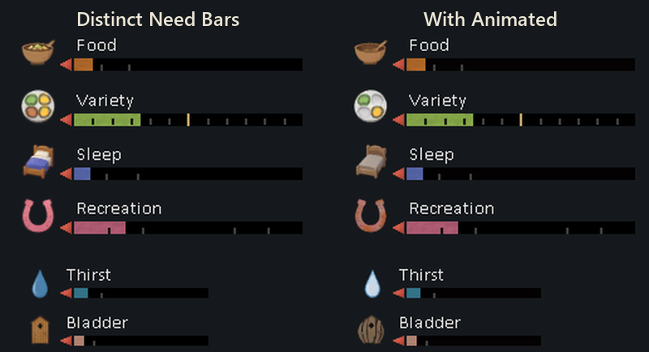
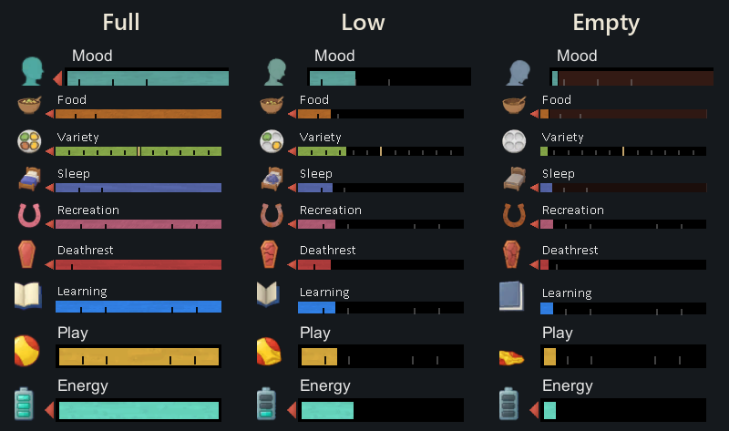
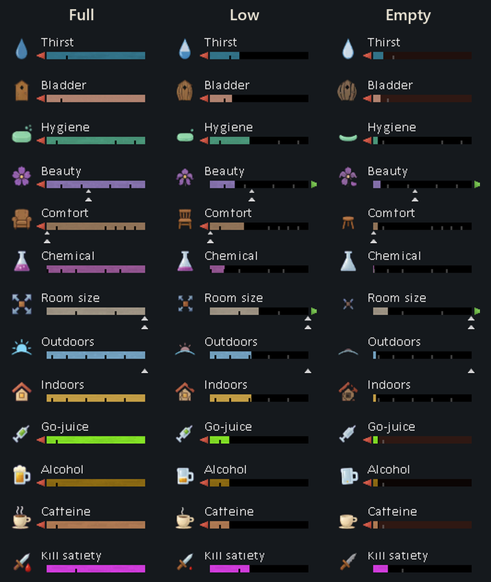
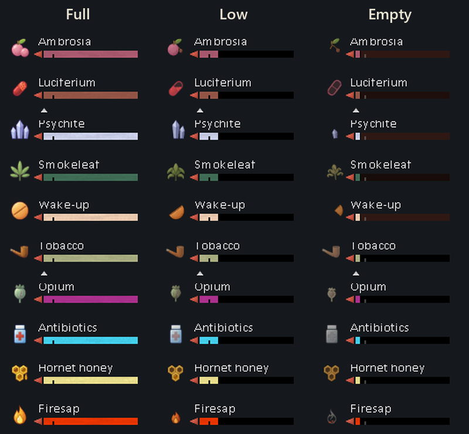
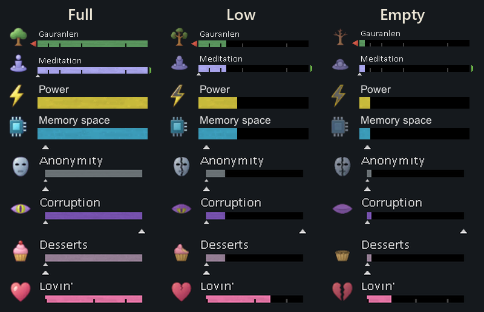
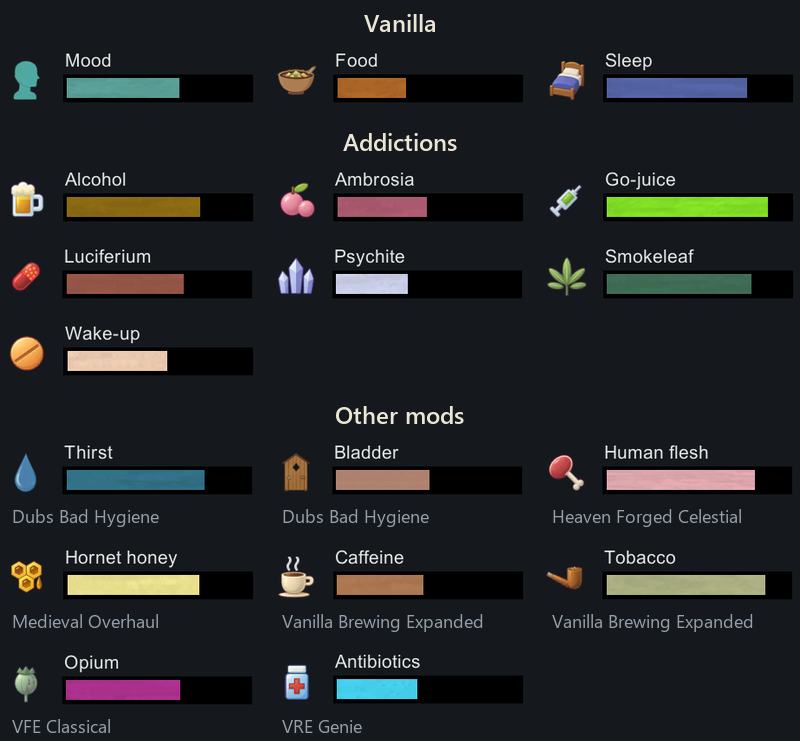

Distinct Need Bars: Animated
Draft for review, lanes DNBA-PAGE (2026-11-02), DNBA-PAGE2 and DNBA-PAGE3 (2026-11-03). Not published.
Images are the local drafts; on Steam the description images load from https://evyatar108.github.io/rimworld-media/dnba/. The preview is the
animated preview.gif (uploaded with SteamWorkshopAgent's preview command); About\Preview.png stays the still
preview.png for the game's mod list. The gallery is two PNG stills.

Preview at the Workshop's thumbnail width (230 px):



An add-on for Distinct Need Bars. It needs Distinct Need Bars 1.1.1 or later and Harmony, and loads after Distinct Need Bars.
Ever missed that a colonist was starving until the mood break? This add-on makes the need icons and bars react as a need runs low: the icons change picture (the Food bowl empties, the Sleep bed is left unmade, then stripped, the Alcohol mug drains), the icons of needs that are running out give a short wiggle, their bars glow faintly red, and a bar slides to its new level instead of jumping.
What it does
The icons change picture. 41 needs have three pictures: full, low and empty. Food's icon shows a full bowl while a colonist is fed, a low bowl once they are Hungry, and an empty bowl when they are Urgently hungry or Starving. The other needs switch at their own marks on the bar. The list is below.
Icons wiggle when a need runs low. When a need drops below the lowest mark on its bar, its icon gives a short wiggle every second and a half. Every icon that is low wiggles at the same moment, so a colonist in trouble stands out in the Needs tab. The animation at the top of this page shows one colonist's Food, Sleep and Mood: fed, running low, below the last mark, then refilled.
The empty part of the bar glows. Below that same mark, the empty part of the bar slowly pulses a faint red. The bar's own colour stays readable over it.
Bars slide instead of jumping. When a need rises or falls in one go, such as when a colonist finishes a meal, its bar slides to the new level in under half a second. This works in the Needs tab and the caravan tab.

Everything else stays as it was. Distinct Need Bars still draws every bar, colour and icon. This add-on only changes the need pictures, the wiggle, the glow and the slide, and only in the Needs tab and the caravan tab. The slave tab's Suppression bar and the Biotech gene gizmos don't change.

Which needs show low and empty pictures
- Vanilla: Mood, Food, Sleep, Recreation, Beauty, Comfort, Room size, Outdoors, Indoors and Chemical.
- Addictions: Alcohol, Ambrosia, Go-juice, Luciferium, Psychite, Smokeleaf and Wake-up.
- Biotech: Energy (mechanoids), Deathrest and Kill satiety (sanguophages), Learning (children) and Play (babies).
- Other mods: Thirst, Bladder and Hygiene from Dubs Bad Hygiene; Variety from Variety Matters 2; Caffeine and Tobacco from Vanilla Brewing Expanded; Human flesh from The Heaven Forged Celestial; Hornet honey from Medieval Overhaul; Opium from Vanilla Factions Expanded - Classical; Antibiotics from Vanilla Races Expanded - Genie; Lovin' from Vanilla Races Expanded - Highmate; Memory space and Power from Vanilla Races Expanded - Android; Anonymity, Corruption and Desserts from Vanilla Ideology Expanded - Memes and Structures; Firesap from [LTS]Biosphere; and the Gauranlen and Meditation genes' needs from Integrated Genes.




Which needs wiggle and glow
The needs that harm a colonist when they run out:- Vanilla: Mood, Food and Sleep.
- Addictions: Alcohol, Ambrosia, Go-juice, Luciferium, Psychite, Smokeleaf and Wake-up.
- Other mods: Thirst and Bladder from Dubs Bad Hygiene, Human flesh from The Heaven Forged Celestial, Hornet honey from Medieval Overhaul, Caffeine and Tobacco from Vanilla Brewing Expanded, Opium from Vanilla Factions Expanded - Classical, and Antibiotics from Vanilla Races Expanded - Genie.

The setting
One checkbox in the mod settings, "Animate needs that are running out or refilling", turns the wiggle, the glow and the slide off. The low and empty pictures stay either way.Compatibility
- Requires Distinct Need Bars 1.1.1 or later and Harmony. Load it after Distinct Need Bars.
- RimWorld 1.6 and 1.7.
- It only changes how the bars are drawn and saves nothing, so you can add or remove it from a running colony.
- Mods that draw their own need bars, such as RimHUD and Numbers, keep their own look.
Feedback
Found a bug? Post it in the comments with your mod list and log if you can. Would you like another need to wiggle or get low and empty pictures? Tell me which one, and which mod it comes from.How much AI did you use to make this mod and its images? Yes. The page images are real in-game screenshots.
Links
Description: 7,404 of Steam's 8,000 characters. Gallery order: preview, 02-food-states.png, 06-settings.png.